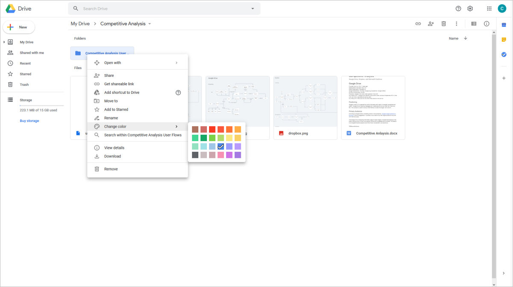

Google Drive
Google Drive was overwhelmingly the most popular service. It also was mentioned most when people discussed their frustrations. Its interface is clear and mostly intuitive.
Interface
Drive's interface has contextual menus accessed by right-clicking and a persistent file tree that displays nested, customizable folders.
Contextual Menu

File Tree

- Strengths
- Handy sidebar with persistent file tree and access to recent, shared and starred files
- Contextual menus and drag & drop interface
- Easy to locate files and folders with with colored folders, stars, and search
- Weaknesses
- Basic version control
- Lacks file tagging
- File tree expands indefinitely
- Opportunities
- Advanced version control
- Automatic file tagging for photographs
- More intuitive file tree